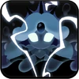

Toppings:


Se dice que las sirenas de buen corazón alguna vez sirvieron como cuidadoras y protectoras del océano, pero aquí, en el Mar Duskgloom,
solo encontrarás rencor oscuro. Nadie sabe el motivo detrás de la ira centenaria de Black Pearl Cookie, pero con ella en el trono
submarino de los restos del naufragio, el Mar Duskgloom ha ganado su notoriedad como el cementerio abisal. Ella no busca cariño ni
comprensión, pero entonces ¿qué es lo que busca Black Pearl Cookie?
"¡Abraza el silencio del abismo!"
Esta piedra contiene un pedazo del alma de Black Pearl Cookie. Es elegante y brillante como una fina perla negra.


Se sumerge en el abismo y cambia a su verdadera forma, creando un remolino que inflige daño periódico y arrastra incluso a los enemigos
resistentes a las interrupciones. Los enemigos, aterrorizados por el tamaño gigante de la galleta, sufren el Terror del Abismo. Si se
disipa Terror of the Abyss, el objetivo recibirá un daño verdadero proporcional al HP máximo del objetivo.